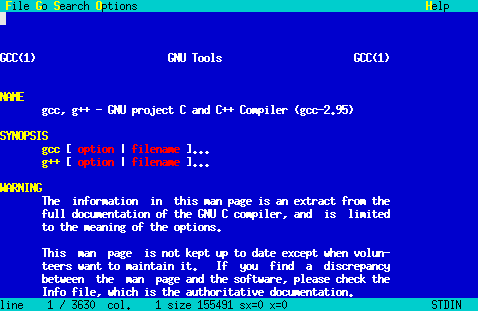
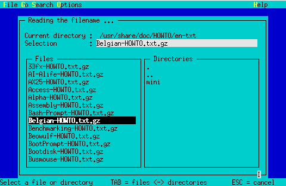
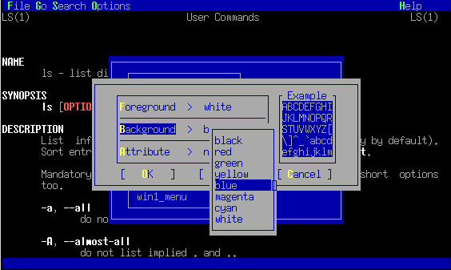

Lookat/Bekijk
News
- 28 Dec 2015 Lookat 1.4.4 has been released
- 17 Oct 2015 Lookat 1.4.4rc2 has been released
- NetBSD support
- 21 Jul 2015 Lookat 1.4.4rc1 has been released
- openBSD support
- English translation issues corrected
- autoconf updated to 2.69
- Corrected mirror compile warnings
- 18 Aug 2013 Lookat 1.4.3 has been released
Lookat 1.4.3 has been released.
Download: lookat_bekijk-1.4.3.tar.gz
- 12 May 2013 Lookat/bekijk Has Landed in Fedora
Thanks to Christopher Meng
Lookat has landed in Fedora: https://admin.fedoraproject.org/pkgdb/acls/name/lookat - 27 Apr 2013 Lookat 1.4.3rc1 released
This maintenance release compiles correctly with LLVM clang.
Download: lookat_bekijk-1.4.3rc1.tar.gz
- 12 Dec 2012 Lookat 1.4.2 released
Lookat 1.4.2 has been released.
- 2 Sep 2012 Lookat 1.4.2rc2 released
- Added FreeBSD patch
- Added redhat specfile
- Added debian package dir
- Corrected mirror manpage errors
- xmalloc.c updated for non compatible GNU malloc for systems like AIX
Download: lookat_bekijk-1.4.2rc2.tar.gz
- 2 Nov 2011 Lookat 1.4.2rc1 released
Lookat 1.4.2rc1 is a maintenance release that resolves compile issues on some 64bits systems.
Download: lookat_bekijk-1.4.2rc1.tar.gz
- 26 Oct 2011 Lookat 1.4.1 AMD64 patch available
If you have an issue to compile lookat on a 64 bits system:
Download the lookat 1.4.1 source and the amd64 patch.$ tar xzvf lookat_bekijk-1.4.1
$ cd lookat_bekijk-1.4.1
And apply the patch$ patch -p1 -i <path_to_lookat_bekijk-1.4.1_fixadm64.patch>
Lookat - Bekijk 1.4.4
-
What is "lookat"?
"lookat" (or "bekijk" in the Dutch version) is a program to view Un*x text files and manual pages.
-
History
Under DOS I used list.com to view text files. I didn't find such a program under my favorite OS, GNU/Linux. The standard Un*x utilities (more, less, view ...) weren't userfriendly enough. For this reason I have made "lookat".
-
License
Like the most programs under Linux is "lookat" Free :-)) and is the source available. "lookat" is published under the GNU General Public License.
-
ChangeLog
see ChangeLog
-
Bugs
None known yet, when you find one let me know :-)
-
Downloads
Download the source code.
A FreeBSD port is available at http://www.freshports.org/sysutils/lookat/
Fedora packages are available at: https://admin.fedoraproject.org/pkgdb/acls/name/lookat
-
Installation
see INSTALL
-
Screenshots


